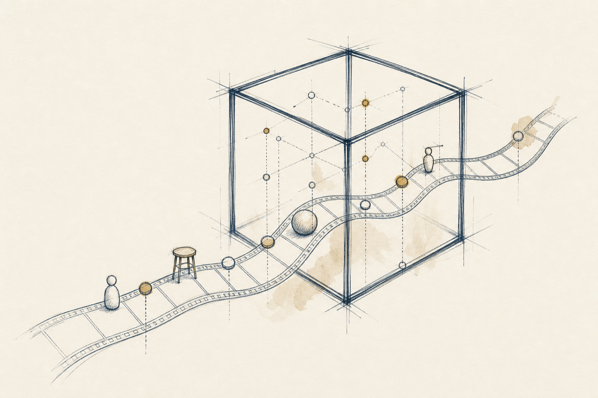
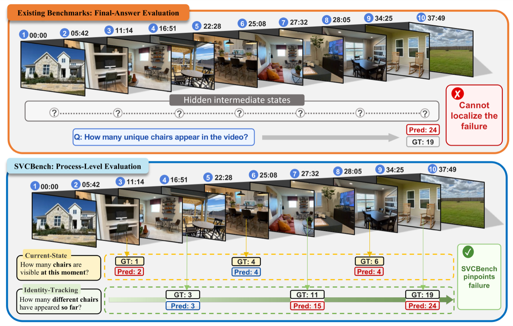
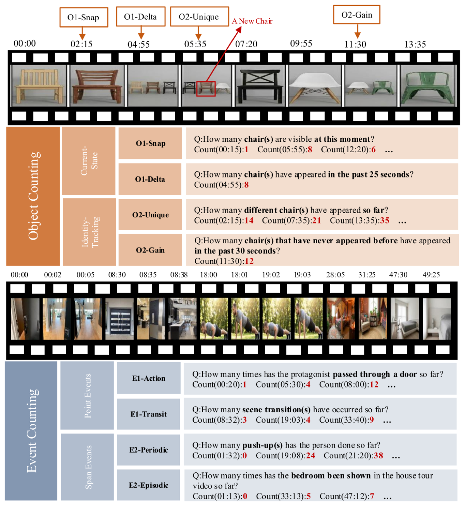
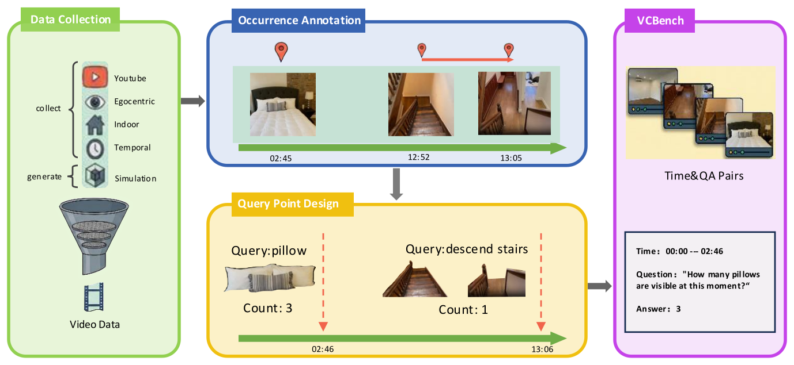
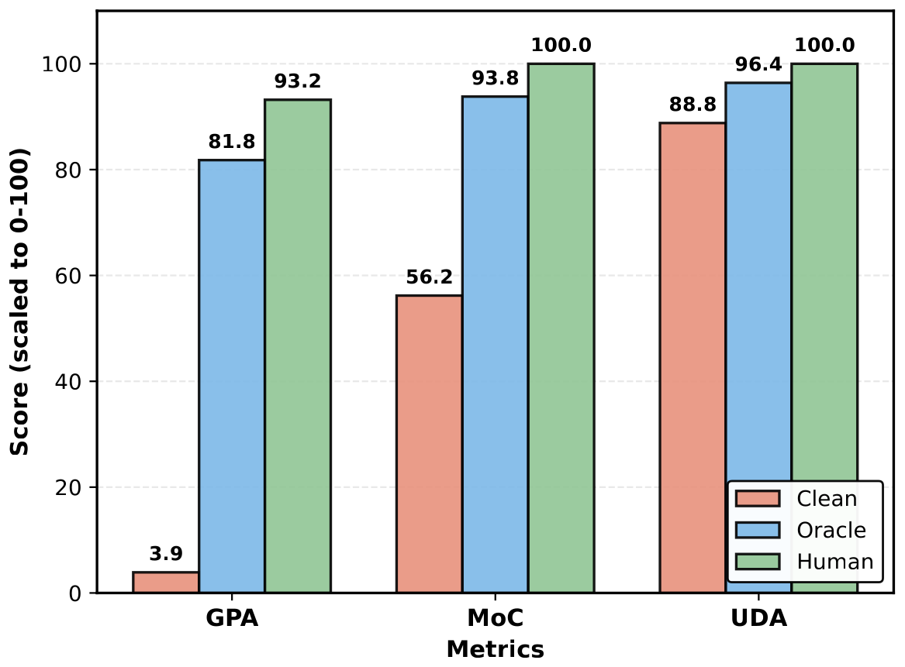
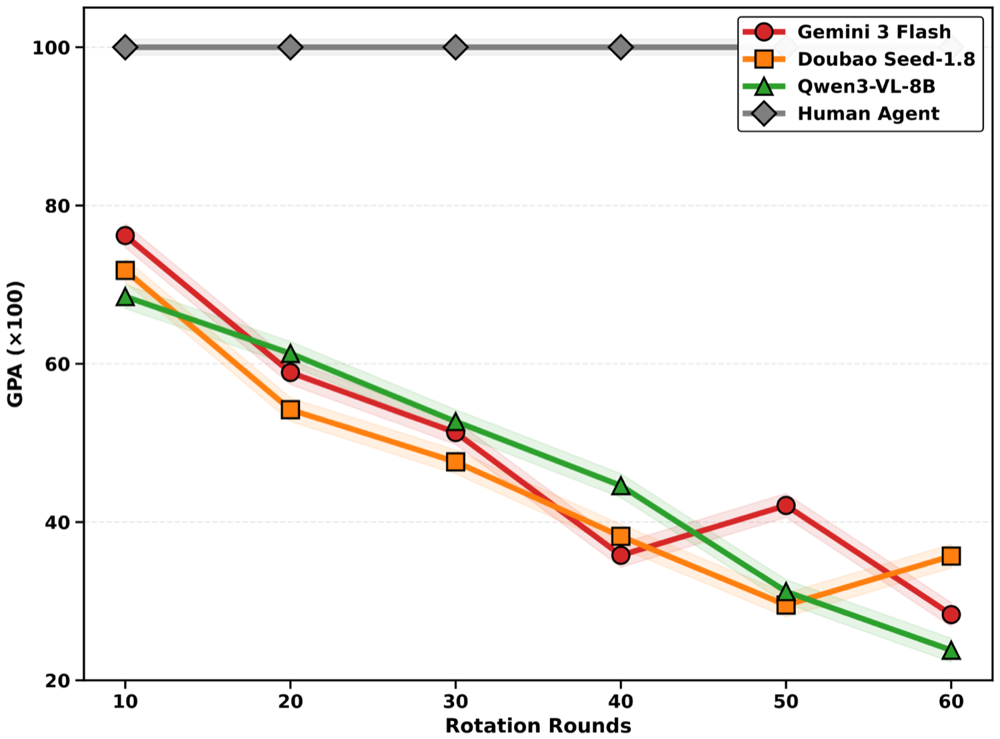

ECCV 2026
SVCBench
A Streaming Video Counting Benchmark for Spatial-Temporal State Maintenance
Counting, used as a controlled probe for world-state maintenance: models update object and event counts along the video timeline, so evaluation can localize exactly when and where state tracking breaks.

- 406
- videos
- 1,000
- streaming QA pairs
- 4,576
- timeline query points
- 10,071
- annotated state changes
- 8
- fine-grained subcategories
- 1 Institute of Artificial Intelligence, Beihang University
- 2 Meituan
- 3 Hangzhou International Innovation Institute, Beihang University
† Corresponding author

The problem
Final-answer scoring hides where a model loses the thread.
Long-video understanding is not only about recognizing what happened; a model must continuously maintain internal state as a scene evolves. SVCBench queries that state at many points along the timeline, turning a single graded number into a trajectory that shows when updates are missed and when counts drift.

Two families, eight subcategories.
We decompose state maintenance into object counting and event counting, then split each by what must be tracked and how it updates over time. The result is a diagnosable taxonomy rather than one aggregate score.
Object counting
Current-state tracking
O1-Snap counts objects visible at a moment; O1-Delta counts the change across a time window. The count rises and falls in real time.
Cumulative identities
O2-Unique counts distinct individuals seen so far; O2-Gain counts newcomers in a window. The trajectory should never decrease.
Event counting
Instantaneous events
E1-Action counts brief atomic actions; E1-Transit counts hard scene transitions. Each occurrence is a discrete moment to detect.
Activity cycles
E2-Periodic counts complete repetitive cycles; E2-Episode counts semantically complete segments. Both demand boundary detection over time.

Built timeline-first, annotated frame by frame.
Videos are drawn from web platforms, existing vision datasets, and physics simulations, then annotated for every event occurrence and object state change. Query points are placed at stable frames across each timeline.

| Category | Questions | Videos | Annotated events | Avg. density |
|---|---|---|---|---|
| Object counting | 546 | 196 | 2,483 | 4.5 |
| O1-Snap | 81 | 78 | - | - |
| O1-Delta | 98 | 75 | - | - |
| O2-Unique | 289 | 171 | 2,483 | 8.6 |
| O2-Gain | 78 | 64 | - | - |
| Event counting | 454 | 281 | 7,588 | 16.7 |
| E1-Action | 203 | 146 | 1,893 | 9.3 |
| E1-Transit | 48 | 29 | 682 | 14.2 |
| E2-Episode | 147 | 100 | 1,033 | 7.0 |
| E2-Periodic | 56 | 56 | 3,980 | 71.1 |
Three metrics for one trajectory.
Streaming queries produce a prediction trajectory, not an isolated answer. Three complementary metrics read different things from it, and together they separate distinct failure modes.
Gaussian Precision Accuracy
Scores how close each predicted count is to ground truth, with a soft Gaussian tolerance that rewards near-misses and penalizes large outliers.
Monotonicity Consistency
Checks whether trajectories for cumulative quantities stay non-decreasing, flagging the first point where the prediction regresses.
Update Detection Accuracy
Measures whether the prediction actually changes at the moments the ground-truth state changes, capturing update timing.
Models stay far below human state maintenance.
Overall GPA on SVCBench, scaled to the human ceiling of 96.1. Even strong models look temporally smooth while missing the precise updates that counting demands. Hover a row for its MoC and UDA.
Best model 37.0 GPA versus human 96.1: a gap of 59 points. All models score below 11 on periodic event counting (E2-Periodic), where humans reach 93.2.
Where the failure actually lives.
Two controlled experiments isolate the bottleneck: the issue is grounding visual change in time, not the arithmetic of cumulative counting.


Citation
@inproceedings{liu2026svcbench,
title = {SVCBench: A Streaming Video Counting Benchmark for
Spatial-Temporal State Maintenance},
author = {Liu, Pengyiang and Shi, Zhongyue and Hao, Hongye and Fu, Qi and
Bi, Xueting and Zhang, Siwei and Hu, Xiaoyang and Wang, Zitian and
Huang, Linjiang and Liu, Si},
booktitle = {European Conference on Computer Vision (ECCV)},
year = {2026}
}